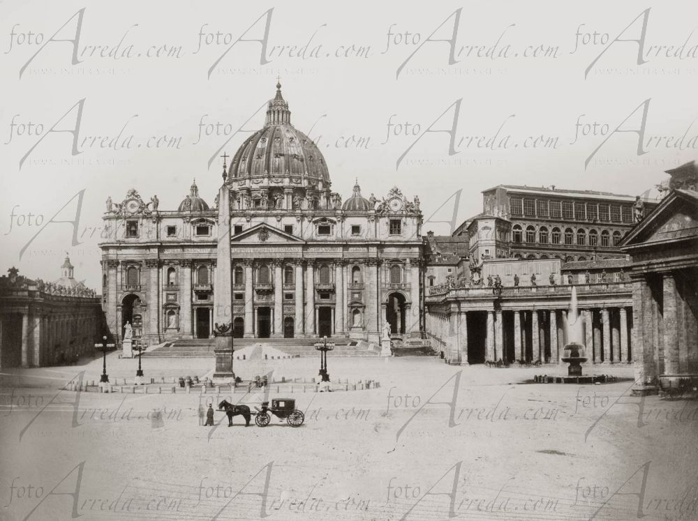
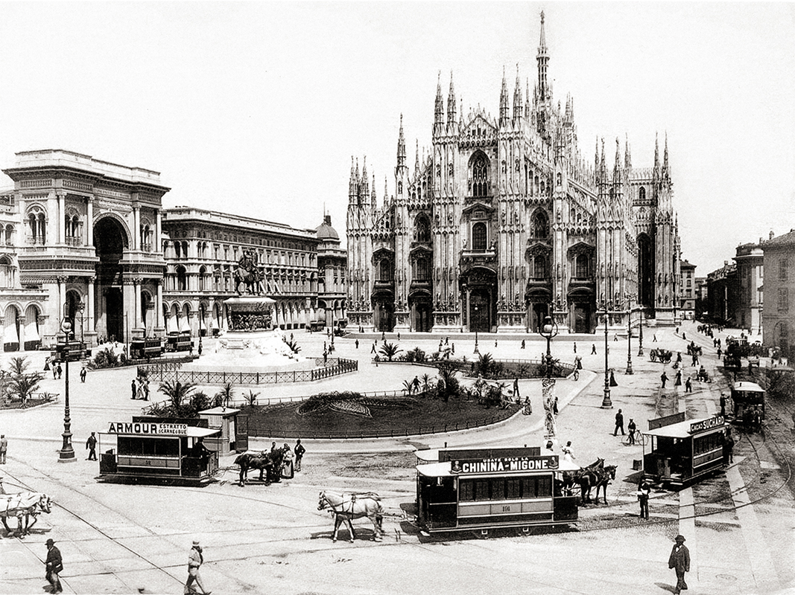
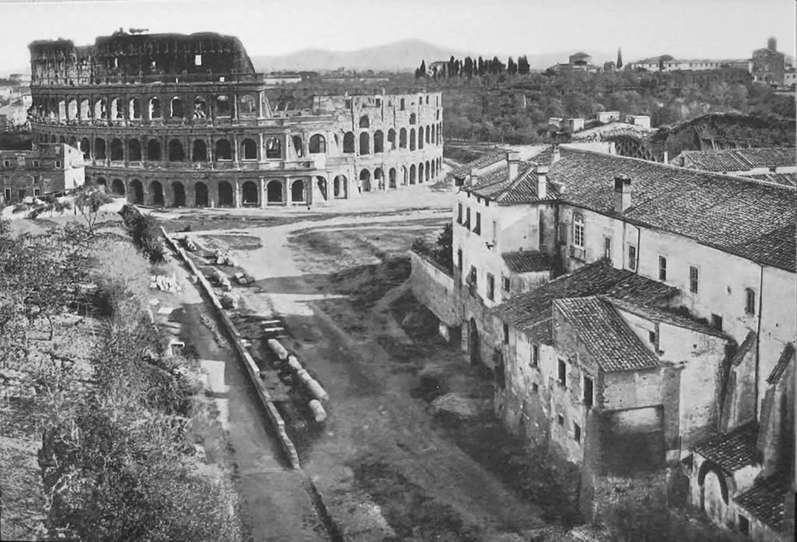
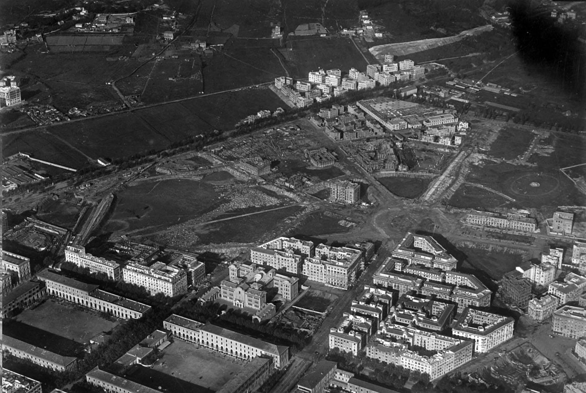
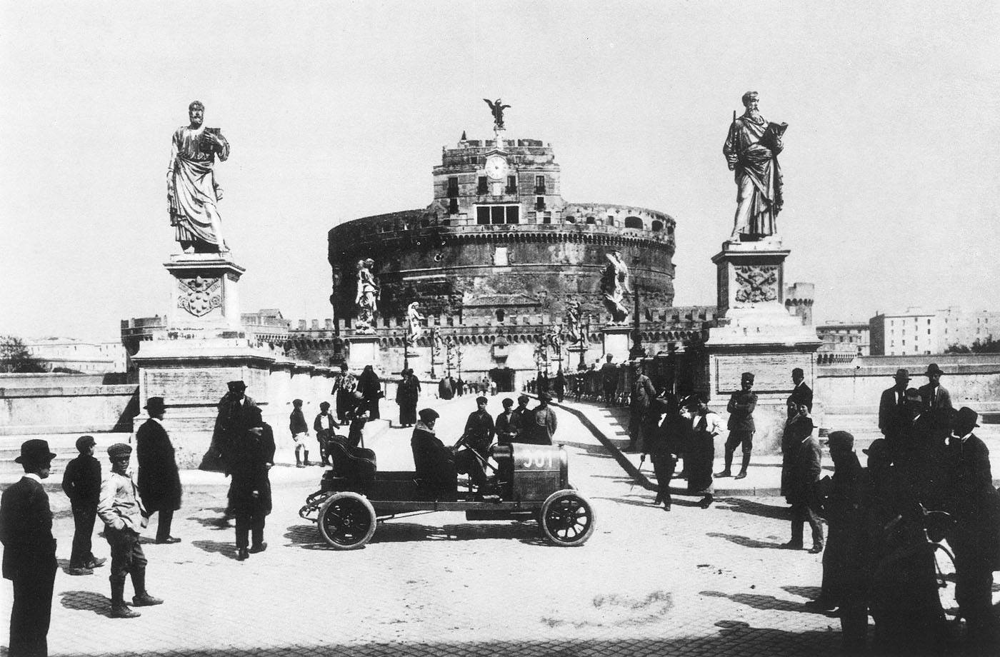
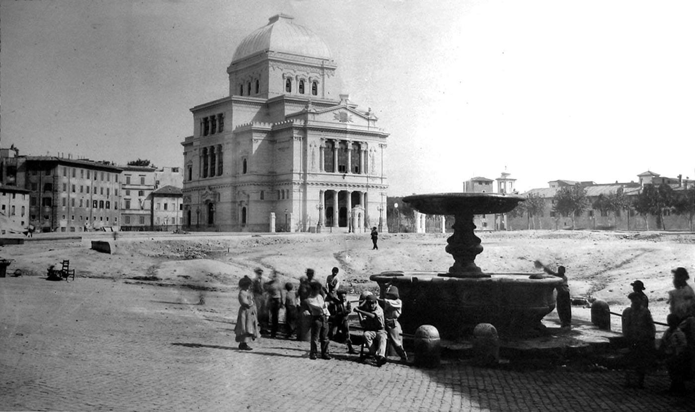
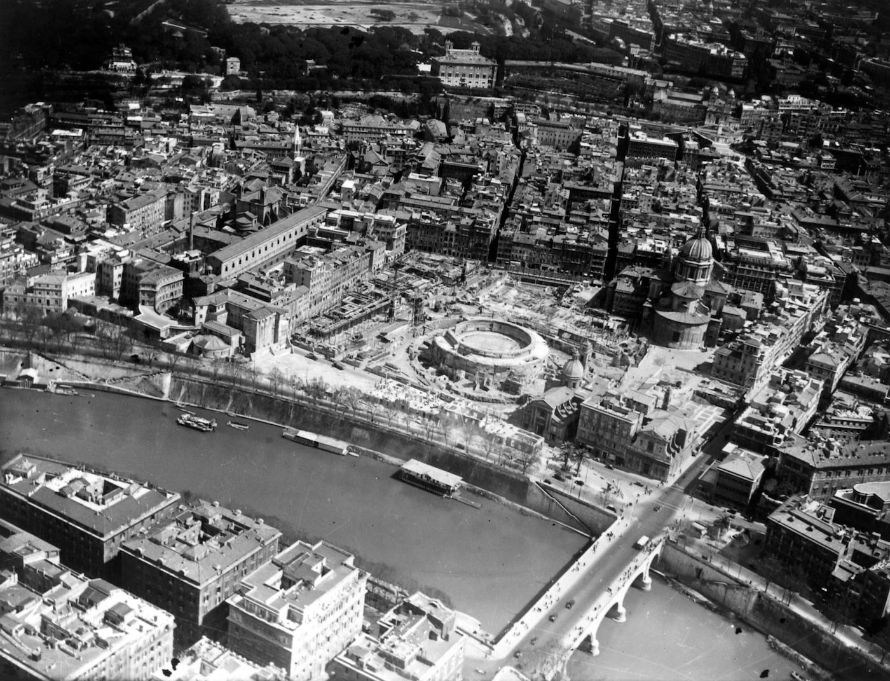

L'UNITÀ D'ITALIA
L'Unità
Guerre
Patrioti
La Mafia
Italia Moderna
Cronologia
ESPLORA
L'Italia Nel Tempo
Un viaggio attraverso le trasformazioni del nostro paese
Basilica di San Pietro

1870
2025
Milano e il Duomo

1861
2025
Altre Fotografie Storiche

1860
Roma Antica

1923
Roma, Via del Corso

1890
Roma, Ponte Sant'Angelo

1925
Roma, Piazza delle Cinque Scole

1935
Roma, Mausoleo
1955
Roma, Giro d'Italia
1901
Roma, Largo Chigi
1930
Roma, Largo di Torre Argentina
×